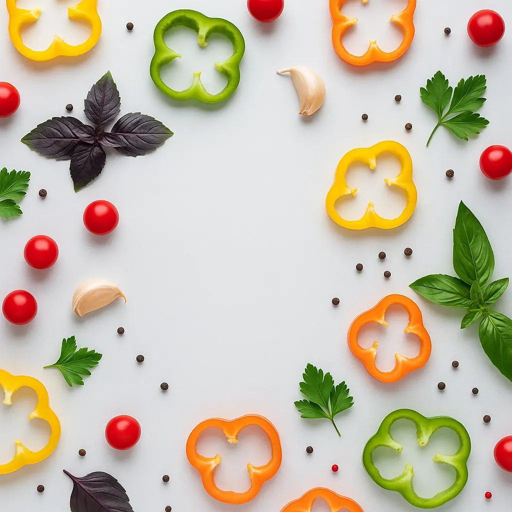
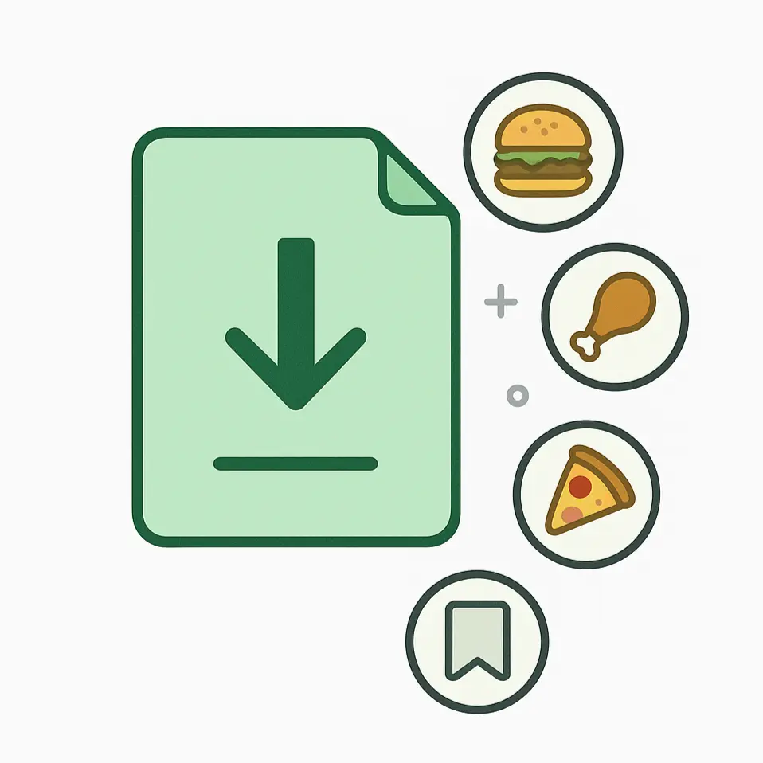

Spaghetti Bolognese
Classic Italian pasta with meat sauce

Chicken Caprese
Grilled chicken with fresh mozzarella

Avocado Toast
Fresh avocado on sourdough bread
Scan Failed
Could not identify ingredients